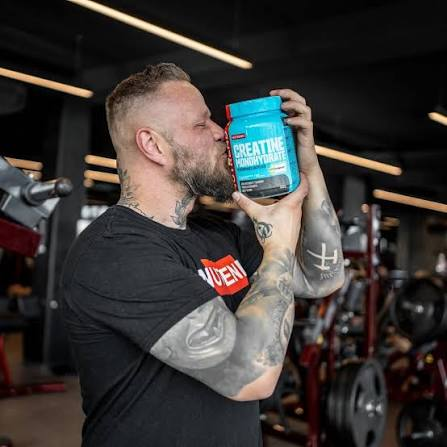

The Science Behind Creatine Monohydrate
Creatine monohydrate is one of the most thoroughly researched and clinically proven ergogenic aids available today. It rapidly facilitates adenosine triphosphate (ATP) resynthesis during short bouts of maximal anaerobic exertion on bars or with weights. Sustained daily supplementation significantly enhances maximal power output and accelerates lean muscular hypertrophy. Furthermore, extensive clinical literature confirms it is completely safe for healthy adults when daily fluid intake remains optimal.
Key Milestones in Creatine Research
- 1832 — French scientist Michel Eugène Chevreul discovers creatine in skeletal muscle.
- 1926 — Researchers confirm that supplemental creatine promotes systemic nitrogen retention.
- 1992 — Olympic medalists at the Barcelona Games report widespread use to enhance performance.
- 2000s — Global sports science consensus establishes creatine monohydrate as the gold standard aid.
Key Facts & Practical Insights
- The scientifically optimal daily maintenance dosage is precisely 3 to 5 grams.
- A high-dose loading phase is entirely optional; saturation occurs smoothly within 3 to 4 weeks.
- It draws intracellular water into muscle cells, directly stimulating cellular protein synthesis.
- Absorption efficiency improves slightly when consumed alongside high-glycemic carbohydrates or whey protein.
Visual Reference & Expert Quote

"Dietary supplements are designed to complement your daily nutrition, but the cornerstone remains uncompromising effort and discipline."
— International Society of Sports Nutrition (ISSN)
Educational Video & External Evidence
Watch an in-depth breakdown of proper supplement timing and mechanisms:
For verified meta-analyses and primary literature, consult the independent scientific database: Examine.com Research Portal.